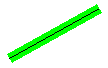
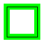
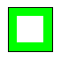

Практическое руководство. Задание толщины и выравнивания пера
При создании Pen, указать толщину пера в качестве одного из аргументов конструктора. Можно также изменить ширину пера Width свойство Pen класса.
Теоретической линии имеет ширину 0. При рисовании линии, одну точку, пиксели центрируются по теоретической линии. Если нарисовать линию, является более чем одному пикселю, пиксели либо центрируются по теоретической линии появятся или к одной стороне от теоретической линии. Можно задать свойство выравнивания из Pen чтобы определить положение точек, рисуемых при помощи этого пера по отношению к теоретической линии.
Значения Center, Outset, и Inset , отображаемые в следующих примерах кода являются членами PenAlignment перечисления.
В следующем примере кода рисует линию дважды: один раз черным пером толщиной в 1 и один раз с помощью зеленого пера шириной 10.
Для изменения ширины пера
Установите для параметра Alignment свойства Center (по умолчанию) будет что рисование зеленым пером пикселей по теоретической линии. Ниже показан итоговый строки.

В следующем примере рисуется прямоугольник дважды: один раз черным пером толщиной в 1 и один раз с помощью зеленого пера шириной 10.
Pen blackPen = new Pen(Color.FromArgb(255, 0, 0, 0), 1); Pen greenPen = new Pen(Color.FromArgb(255, 0, 255, 0), 10); greenPen.Alignment = PenAlignment.Center; // Draw the line with the wide green pen. e.Graphics.DrawLine(greenPen, 10, 100, 100, 50); // Draw the line with the thin black pen. e.Graphics.DrawLine(blackPen, 10, 100, 100, 50);
Изменение выравнивания пера
Установите для параметра Alignment свойства Center будет что рисование зеленым пером пикселей по границ прямоугольника.
На следующем рисунке показан полученный прямоугольник.

Pen blackPen = new Pen(Color.FromArgb(255, 0, 0, 0), 1); Pen greenPen = new Pen(Color.FromArgb(255, 0, 255, 0), 10); greenPen.Alignment = PenAlignment.Center; // Draw the rectangle with the wide green pen. e.Graphics.DrawRectangle(greenPen, 10, 100, 50, 50); // Draw the rectangle with the thin black pen. e.Graphics.DrawRectangle(blackPen, 10, 100, 50, 50);
Для создания вложенного пера
Измените выравнивание зеленого пера, изменив третья инструкция в предыдущем примере кода следующим образом:
greenPen.Alignment = PenAlignment.Inset;Теперь пикселов в ширину зеленая линия отображаются внутри прямоугольника, как показано на следующем рисунке:
